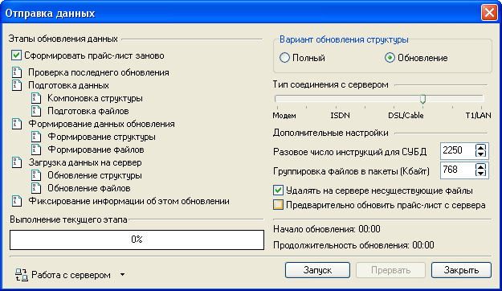
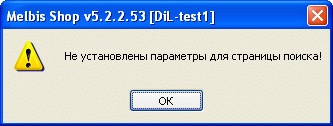
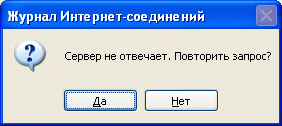

Подготавливаемые в программе Melbis Shop данные для обеспечения функционирования комплекса должны быть отправлены на сервер.
Первоначально следует выбрать "тип соединения с сервером" в соответствии с фактическим, при необходимости откорректировать настройки- "Разовое число инструкций для СУБД" и "Группировка файлов в пакеты".
При первой отправке данных, при появлении самопроизвольного рассогласования данных на машине и на сервере или при отправке с разных компьютеров используется вариант полной перезагрузки, а при внесении текущих изменений - обновление изменений, что значительно ускоряет процесс передачи данных за счет уменьшения объема передаваемой информации. Следует учесть, что выбирается только вариант обновления структурных данных (таблицы), файлы же изображений товаров и описаний, обновляются только в том случае, если изменилась их дата и время модификации. Поэтому, если есть необходимость перезагрузить все файлы изображений и описаний, Вам необходимо зайти по FTP на свой сайт и удалить все файлы в папке /files. Опция "Удалять на сервере несуществующие файлы", может быть полезна в том случае, когда Вы хотите оставить на сервере файлы изображений и описаний, которые не сохранились на локальном компьютере.
В левой части окна при запуске отправки данных отражаются этапы обновления данных :

Опция "Сформировать прайс-лист заново" автоматически формирует прайс-лист интернет-магазина, используя последние настройки, см. подробнее "Формирование прайс-листа в Excel".
Если используется дополнительная программа Melbis Shop Spider, то возможна ситуация, когда Вам необходимо отправить данные на сервер, а ваши данные об остатках товаров устарели. Поэтому, перед отправкой необходимо получить информацию о последних изменениях прайс-листа (количество, цены, статусы и т.п.), которую выполнила программа Melbis Shop Spider. В этом случае, необходимо выбрать опцию "Предварительно обновить прайс-лист с сервера", тогда перед отправкой данных будет автоматически выполнена операция обновления прайс-листа с сервера, см. подробнее в "Обновить прайс-лист с сервера".
Если параметры для страницы поиска в общих настройках магазина (Закладка "Каталог") не заданы, выдается сообщение:

после чего появляется окно общих настроек магазина для выбора параметров для страницы поиска. Осуществив указанный выбор, отправку данных на сервер следует повторить.
В случае успешной отправки данных выводится сообщение: "Обновление данных завершено".
При попытке отправки данных возможно также появление следующего предупреждения:

В этом случае необходимо убедиться в наличии связи с сервером, а также проверить параметры подключения к серверу и повторить запрос.